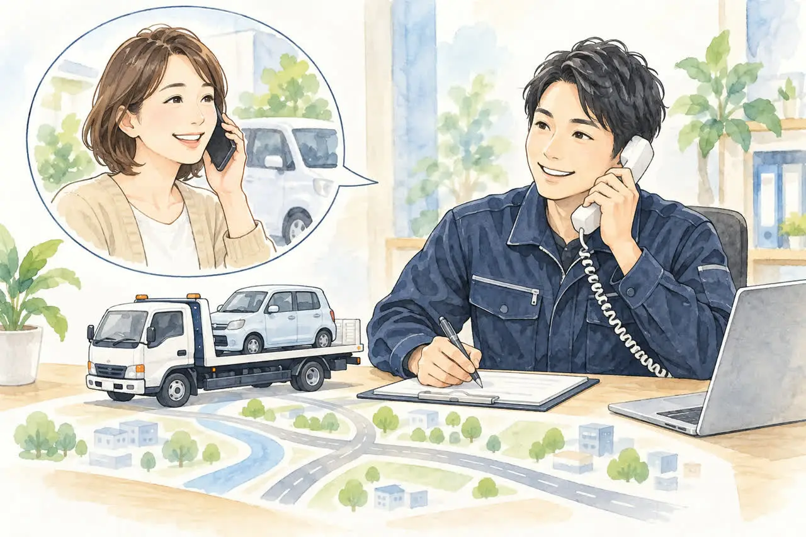
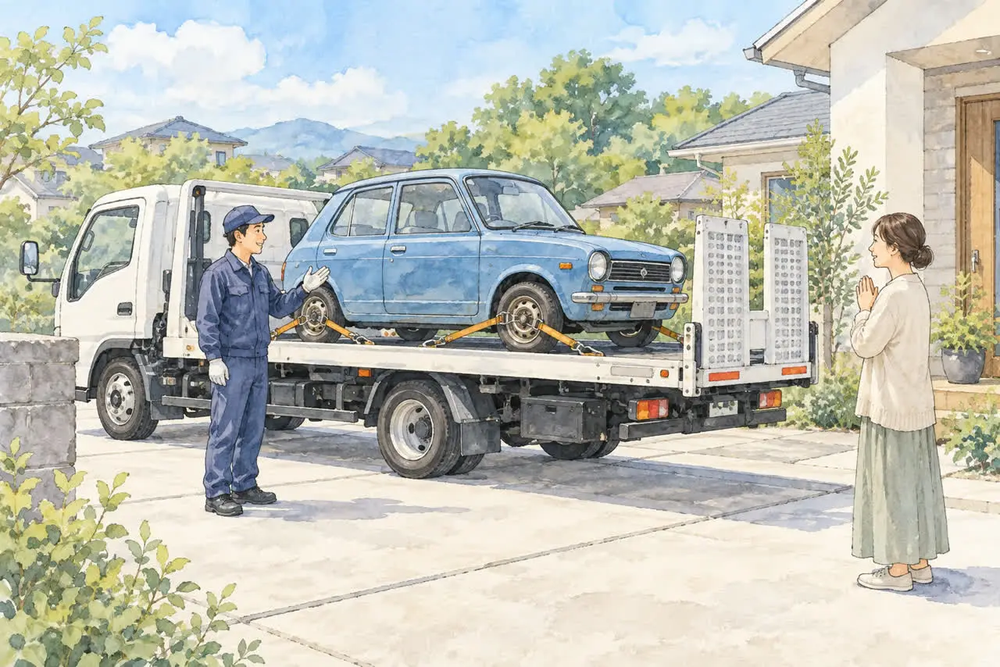
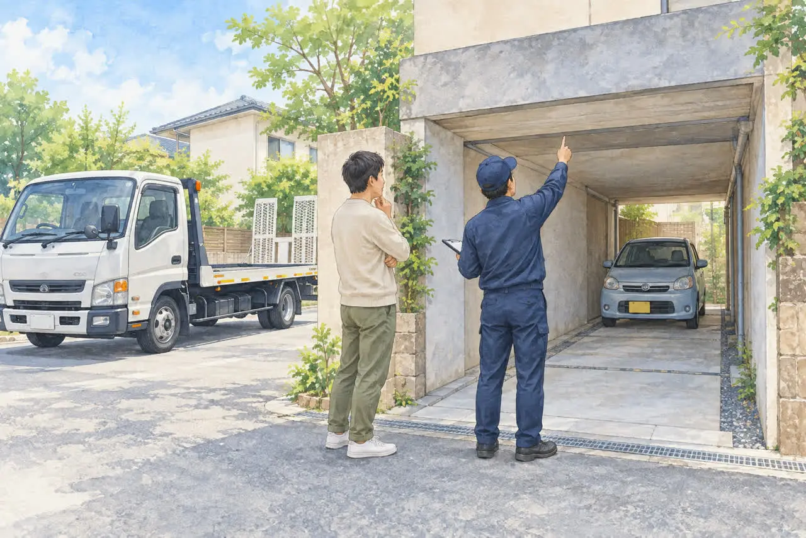
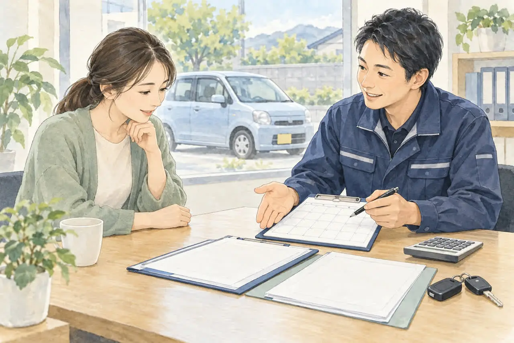

引き取りをお考えの方へ
出張引き取りの対応エリア
無料で伺える範囲は？
公開
こんにちは、足立区江北で自動車解体・廃車買取をしている「大崎商店 環七店」です。
「車を引き取りに来てもらえるのは、どのあたりまで？」
「家は足立区の外だけど、来てもらえる？」
「レッカー代や出張費は、かかるの？」
車を手放したいと思ったとき、引き取りに来てもらえるか、いくらかかるかは、いちばん気になるところですよね。
この記事では、大崎商店が無料で引き取りに伺える範囲と、その考え方を、はっきりご案内します。
結論：車の種類や状態によって、無料の範囲が変わります

大崎商店の引き取りは、次のとおりです。
- 買取価格がつかない車：環七店から車で片道約30分圏内は、レッカー代・出張費が無料です
- 買取価格がつく車：片道約30分圏外でも、所在地と車の状態によっては、無料で引き取りに伺えます。対応の可否と費用は、事前にご案内します
- 廃車手続きの代行・解体の費用：どの車でも無料です
無料引き取りの基本の範囲は、環七店から車で片道約30分圏内です。「約30分」は目安のため、実際の住所と車の状態を伺い、対応の可否と費用を事前にご案内します。
買取価格がつく車は、30分圏外でも無料で伺えることがあります
次のような車は、買取価格がつく場合があります。
- 車として売買ができる車：ハイエースのような商用バンなど、車として価値のある車です。修理して、もう一度販売できる車も含まれます
- 解体して廃車にする車で、還付金・返戻金が見込める車：条件を満たすと、自動車重量税の還付や、自賠責保険の解約による返戻金を受け取れる場合があります。大崎商店では、これらの見込額を買取価格に含め、手続きを当店にお任せいただく方法をご案内しています。価格に含めた分の還付金・返戻金は、必要な譲渡・委任などの手続きをしたうえで当店が受け取ります。これらを価格に含めず、ご自身で手続きして受け取る方法も選べます（残りの期間が1か月以上など、それぞれに条件があります。くわしくは「足立区で事故車を買い取ってもらうには？動かない車でも大丈夫」の記事をご覧ください）
このような車は、片道約30分圏外でも、所在地と車の状態によっては、レッカー代・出張費は無料で伺えます。「遠いから、お金がかかるだろう」とあきらめず、まずは車種と場所、車検の残りをお電話でお知らせください。対応の可否と費用は、事前にご案内します。
買取できるかどうかは、車種・年式・走行距離・状態・車検の残りによって決まります。事故で壊れた車や、動かない車でも、買取できることがあります。
買取価格がつかない車は、片道約30分圏内が無料です

年式が古い車や車検が切れている車でも、車種や状態によっては再利用でき、買取価格がつく場合があります。一方、再利用が難しく、解体して鉄などの資源にする車もあります。査定の結果、買取価格がつかない車でも、環七店（足立区江北）から車で片道約30分圏内であれば、レッカー代・出張費は無料です。
買取価格がつかない場合でも、廃車手続きの代行や、解体の費用はかかりません。
「30分」は目安です
30分圏内というのは、あくまで目安です。同じ距離でも、道の混み具合や時間帯、方面（埼玉方面、東京の南側の品川区・大田区方面、西側の世田谷区・杉並区方面など）によって、実際にかかる時間は変わります。 そのため、「ここまでなら必ず無料」と、はっきり線を引くことが難しいのです。
「30分より少し遠いかもしれない」という場合も、まずはご相談ください。場所と車の状態を伺って、無料で伺えるかどうかを、事前にご案内します。
解体のみの車は、日程に余裕をください
買取価格がつかない、解体のみの車も、ふだんから現地まで引き取りに伺っています。ただ、修理・販売・解体の作業や、ほかの引き取りの予定が重なり、当日すぐの引き取りをお約束できないことがあります。 スケジュールに余裕のある日にお伺いしますので、日程は少し余裕をもってご相談ください。
足立区の外に車がある場合も、所在地をお知らせください
足立区内はもちろん、区外に車がある場合も、まずは所在地をお知らせください。例えば、次のように市区名と町名・番地を伝えていただくと、確認がスムーズです。
- 東京23区：足立区、北区、葛飾区、荒川区、墨田区など
- 埼玉県南部・東部：川口市、草加市、越谷市、八潮市、三郷市など
- 千葉県西部：松戸市、市川市、流山市、柏市など
上記は所在地を伝える際の地域名の例です。記載した市区の全域に対応する、または必ず無料という意味ではありません。 車の種類や状態、場所によって、無料で伺えるかどうかが変わりますので、お電話でご確認ください。
上記以外の地域もご相談いただけます。ただし、遠方など、当店で引き取りに伺えない地域もあります。ご依頼前に所在地を確認し、対応の可否と費用をご案内します。
引き取りが難しい場合もあります

積載車の進入経路や、車を荷台にのせるための作業スペースが必要です。細い道の奥に車がある場合や、作業スペースが確保できない場合は、引き取りが難しくなることがあります。 地下や立体駐車場で、入口の高さに制限がある場合も、事前にお知らせください。
道の広さや、周りのスペースを、お電話のときに教えてください。
お電話のときに、教えていただきたいこと
無料で伺えるか、買取価格がつくかを、早く正確にご案内するために、次のことを教えてください。わかる範囲で大丈夫です。
- 車種・初度登録年月（軽自動車は初度検査年月）：車種がわからない場合は、車検証の車名・型式をお知らせください。初度登録・初度検査年月は、年式を確認する目安になります
- 車が置いてある場所：住所や駐車場の名前など
- 自分で走れるかどうか：走れない場合は、わかる範囲の状況（事故、バッテリー上がり、パンクなど）。原因がわからなくても大丈夫です
- 車の状態：事故で壊れている、長く動かしていない、など
- 車検がいつまで残っているか：車検証の「有効期間の満了する日」で確認できます（電子車検証は「車検証閲覧アプリ」や「自動車検査証記録事項」で確認します）
- 周りのスペース：前の道の広さ、駐車場の入口の高さ制限など
ご相談から引き取りまでの流れ

- お電話でご相談
車種、置いてある場所、自走できるか（できない場合はその理由）をお伺いします。 - 引き取りの可否・費用・日程のご案内
買取価格や引き取り費用、必要書類、伺える日程をご案内します。 - 積載車で引き取り
事前にご案内した書類をご準備ください。必要な記入・押印の時期もご案内します。書類がそろわない場合は、あらかじめご相談ください。 - 車の状態に応じた手続き
解体して廃車にする場合は抹消登録などを、再利用する場合は名義変更などを、当店が代行します。
車種や状態によっては、引き取り当日その場で現金買取もできます。当日の流れは「廃車のご依頼から現金お支払いまでの流れ」の記事でも詳しくご紹介しています。
よくある質問
Q. 本当に無料ですか？
A. 買取価格がつかない車は、環七店から車で片道約30分圏内が無料です。買取価格がつく車は、30分圏外でも、所在地と車の状態によっては無料で伺えます。どちらの場合も、廃車手続きの代行と解体の費用はかかりません。
Q. 30分より遠い場所でも、来てもらえますか？
A. 場所と車の状態を伺って、可能かどうかをご案内します。買取価格がつく車は、片道約30分圏外でも、所在地と車の状態によっては無料で伺えることがあります。遠方など対応できない地域もあるため、事前にご確認ください。まずはご相談ください。
Q. 動かない車や、事故で壊れた車でも引き取れますか？
A. 動かない車や事故車も、積載車での引き取りをご相談いただけます。所在地や車の状態、作業スペースなどを確認して、対応の可否をご案内します。事故のあとの対応は「事故を起こして車が動かないときの対応」、買取や引き取りは「足立区で事故車を買い取ってもらうには？」「エンジンがかからない車でも引き取ってもらえる？」をご覧ください。
Q. 必要な書類は？
A. 普通車と軽自動車で異なります。くわしくは「廃車に必要な書類チェックリスト（普通車）」「軽自動車の廃車に必要な書類・準備チェックリスト」をご覧ください。
引き取りのご相談は、大崎商店へ
引き取りの範囲や費用は、車によって変わります。だからこそ、「うちの車は大丈夫かな？」と迷ったら、お電話でご相談ください。車種と場所を伺って、無料で伺えるか、買取価格がつくかを、正直にご案内します。
- 廃車手続きの代行・解体の費用は無料
- 買取価格がつかない車も、環七店から片道約30分圏内は引き取り無料
- 買取価格がつく車は、圏外でも、所在地と車の状態によっては無料で引き取り（事前にご案内します）
- 車種や状態によっては、引き取り当日その場で現金買取も可能
大崎商店 環七店
電話：03-3854-4141
〒123-0872
東京都足立区江北7丁目1−3
営業時間：月〜土 10:30〜18:00
休業日：日曜・祝日
環七沿い／舎人ライナー
西新井大師西駅
大崎商店 入谷店
電話：03-3899-2837
〒121-0836
東京都足立区入谷7丁目5−11
営業時間：月〜土 9:30〜17:30
休業日：日曜・祝日・第2土曜
お電話の際は、「引き取りの範囲について」とお伝えください。車種と、車が置いてある場所がわかると、ご案内がスムーズです。
※掲載のイラストはAIで作成したイメージです。実際の店舗・車両・引き取り現場や、対応エリアの境界を示すものではありません。
参考：国土交通省・電子車検証と車検証閲覧アプリ